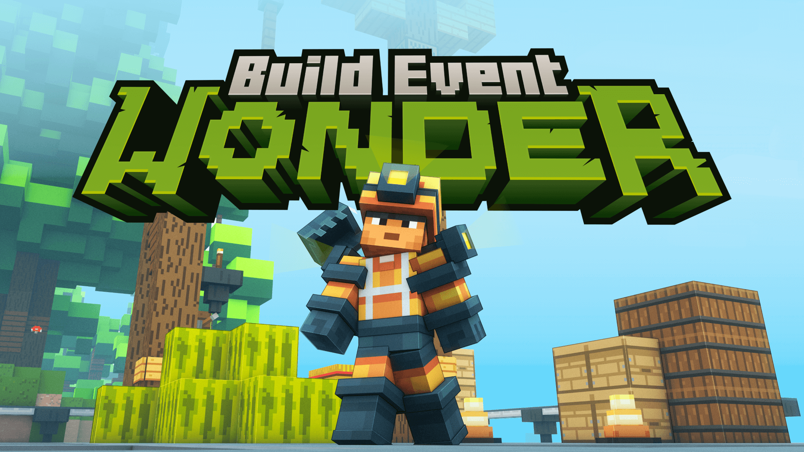

Le wonder 13 arrive sur ng!

Le Wonder fait son grand retour pour une 13e édition, du 19 au 26 février !
Cet événement unique oppose tous les serveurs d'une même version (Java et Bedrock) dans un concours de construction en équipe, avec un nouveau thème à chaque édition !
Grande nouveauté cette année : le Wonder s'étend sur deux jours supplémentaires. Pas d'inquiétude, ces journées seront exclusivement réservées aux Opérateurs pour perfectionner l'ambiance, la musique, les NPCs et les visuels. Objectif : t'offrir une expérience plus fluide et immersive, avec une meilleure gestion du jour et de la nuit. Cela permettra aussi aux Opérateurs d'avoir plus de temps pour peaufiner l'univers du concours.
Le Wonder se déroule pendant les vacances scolaires de toutes les zones, afin que chacun puisse y participer. De plus, un système de remplacement simplifié est mis en place :
- Chaque serveur peut accueillir 15 joueurs.
- Un des 3 OP de l'équipe peut remplacer un joueur à tout moment.
- Les bans, en revanche, réduiront définitivement la taille de l'équipe.
- Pour être OP, il faut être soit builder, soit OP d'un serveur (pas nécessairement celui où tu participes).
Calendrier du Wonder
Mercredi 19 février
- 14h00 : Annonce du thème
- 15h00 : Début du live
- 16h00 : Activation du build
Lundi 24 février
- 18h00 : Fin du build
- Le serveur est réservé aux OP et aux équipes de vidéo
Mercredi 26 février
- Retrait des OP et fin officielle du Wonder
- Ouverture des maps aux visites des joueurs
Du mercredi au samedi
- Notation des builds et vidéos
Dimanche 2 mars
- Live de clôture avec présentation des builds et résultats
Barème de notation
Barème de build (Haute Administration) - 40 points
- Taille : 3 points
- Respect du thème : 4 points
- Originalité : 4 points
- Terraforming : 5 points
- Intégration : 3 points
- Nature / Vie : 4 points
- Harmonie d’ensemble / Cohérence : 2 points
- RolePlay : 5 points
- Organiques : 2 points
- Beauté générale : 5 points
- Ambiance : 3 points
Barème de présentation - 40 points
Présentation orale (20 points)
- RolePlay : 5 points
- Clarté des propos : 3 points
- Présentation travaillée : 5 points
- Mise en avant du projet : 7 points
Présentation vidéo (20 points)
- Qualité des enregistrements : 3 points
- Qualité du montage : 3 points
- Mise en avant du projet de build : 4 points
- Justesse du son : 2 points
- Fil conducteur / logique de la vidéo : 4 points
- Avis général (coup de cœur) : 4 points
Le score final est calculé en additionnant :
- La moyenne des notes de build attribuées par la Haute Administration
- La moyenne des notes de build attribuées par les joueurs
- La note de présentation attribuée par la Haute Administration
Prépare-toi à un Wonder exceptionnel où créativité et compétition seront au rendez-vous !